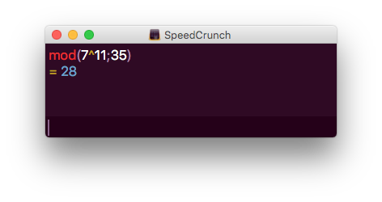
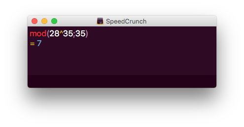

7. Kryptering
Då Anna skickar ett meddelande till Bertil vill hon inte att Cecilia skall kunna läsa meddelanet. För att Cecilia inte skall kunna läsa det krypterar Anna meddelandet så att Bertil vet vad han skall göra för att kunna tyda meddelandet.
I sin enkelhet skiver Anna meddelandet. Hon krypterar det med en nyckel. Bertil får meddelande och dekrypterar meddelandet då han vet vilken nyckel Anna har krypterat meddelandet med.
Nu är verkligheten inte så simpel av sig. Utan när teknologin utvecklas kommer människan på nya sätt att kryptera.
Vi tar här och bekantar oss med symmetrisk och assymterisk kryptering. Den symmetriska krypteringen är historiskt sätt äldre och simplare av sig. Det gör det mycket lättare att bryta än assymetrisk kryptering.
Symmetrisk kryptering
I symmetrisk kyptering använder sig sändaren och mottagaren av samma nyckel för att kryptera och dekryptera meddelandet. Nackdelen med att båda använder sig av samma nyckel är att om någon obehörig får reda på nyckel som är det lätt att tyda alla meddelanden som skickats mellan personerna.
Caesar krypto
Ett av de äldsta kända sätten att kryptera meddelanden är Caesarkryptot som den romerske kejsaren Julius Caesar använde sig av. Kyptot går ut på att man flyttar bokstäverna och tecken fram ett visst antal steg.

https://commons.wikimedia.org/wiki/File:Caesar3.svg
I bilden flyttar vi framåt varje bokstav med 3. Det som man måste komma överrens, de som krypterar, är att var kommer mellanslag och siffror in i nyckeln.
Exempel 1 Anna och Bertil skickar meddelanden åt varandra. De krypterar med Caesarkryptering och flyttar varje bokstav 3 steg framåt. Mellanslag placerar de efter Ö. Siffror använder de sig inte av.
- Kryptera meddelandet: "VI TRÄFFAS VID SJÖN".
- Använd samma nyckel och dekryptera meddelandet "KAPWDCVDIW".
Lösning
Vi behöver en tabell över teckena som används.
| Okrypterat tecken | Värde | Krypterat tecken | Okrypterat tecken | Värde | Krypterat tecken |
|---|---|---|---|---|---|
| A | 0 | D | P | 15 | S |
| B | 1 | E | Q | 16 | T |
| C | 2 | F | R | 17 | U |
| D | 3 | G | S | 18 | V |
| E | 4 | H | T | 19 | W |
| F | 5 | I | U | 20 | X |
| G | 6 | J | V | 21 | Y |
| H | 7 | K | W | 22 | Z |
| I | 8 | L | X | 23 | Å |
| J | 9 | M | Y | 24 | Ä |
| K | 10 | N | Z | 25 | Ö |
| L | 11 | O | Å | 26 | mellansteg, ␣ |
| M | 12 | P | Ä | 27 | A |
| N | 13 | Q | Ö | 28 | B |
| O | 14 | R | mellanslag, ␣ | 29 | C |
Vi får
- Det krypterade meddelandet är "YLCWVAIIDVCYLGCVMBQ".
- Vi går baklänges för att dekryptera. Meddelandet är "HÄMTA SAFT".
Assymetriska krypton
Eftersom symmetrisk kryptering är såpass lätt att bryta av sig använder man sig av assymetrisk kryptering.
Assymetrisk kryptering går ut på att sändaren och mottagaren har en offentlig och en privat nyckel. Då Anna vill skicka ett meddelande till Bertil, krypteras meddelandet med Bertils offentliga nyckel. Sedan dekrypterar Bertil meddelandet med sin privata nyckel.
Då vi krypterar med symmetriska krypton kan vi vara säkra på att användaren är den som den anger sig vara, förutsatt att krypteringen inte är bruten.
Eftersom vi har offentliga nycklar i assymterisk kryptering vet vi inte exakt vem som har skickat meddlandet. Därför undertecknas meddelandet med sändarens privata nyckel för att försäkra mottagaren att meddelandet har kommit från sändaren.
RSA-systemet
RSA-kryptering grundar sig på användning av stora primtal. Algoritmen för RSA-kryptering är följande
- Låt \( p \) och \( q \) vara stora primtal så att \( p \not= q \). Stora primtal är sådan som är större än \( 100^{100} \).
- Bilda \( n = pq \) och \( z = (p-1)(q-1) \).
- Välj \( d \in \{1,2,\ldots, z \} \) så att \( SGF(d,z)=1 \).
- Låt \( e \) vara ett heltal som uppfyller \( 1 \leq e \leq z \) och \( ed \equiv 1 \quad (\mod z) \).
- Representera texten som skall krypteras med en följd, \( m_1, m_2, \ldots \) av heltal, sådana att \( 0 \leq m_i \leq n-1 \) för varje \( i \).
- Kryptera varje \( m_i \), genom att sätta \( E(m_i) = c_i \), där \( c_i \) är det tal i \( \{0,1,\ldots n-1 \} \) som uppfyller \( m_i^e \equiv e_i \quad (\mod n) \).
- För att dekryptera definierar vi \( D(c_i) \) för varje \( c_i \) som det tal \( \{0,1,\ldots, n-1 \} \) som uppfyller \( c_i^d \equiv D(c_i) \quad (\mod n) \). Då kommer vi att ha \( D(c_i) = m_i \) för varje \( i \) och då har vi dekrypterat meddelandet.
För att kryptera en text behöver man känna till värdena \( e \) och \( n \). Dessa tal är den offentliga nyckeln. Den hemliga nyckeln består av talet \( d \) och av primtalen \( p \) och \( d \).
Exempel 2 Vi tar och krypterar och dekrypterar talet 7 med RSA-kryptering. Låt \( p = 5 \) och \( q = 7 \).
Lösning
Vi har \( n = pq = 5\cdot 7 = 35 \) och \( z = (5-1)(7-1) = 24 \).
Vi väljer \( e = 11 \).
Det krypterade meddelandet får i genom att räkna ut modulo \( n \) av meddelandet upphöjt till \( e \). Alltså:

Vi skickar iväg meddelandet 28.
För att dekryptera behöver vi talet \( d \). Talet \( d \) uppfyller villkoret \( 11d \equiv 1 \quad (\mod 24) \). För att komma åt \( d \) löser vi den diofantiska ekvationen \( 11d - 24k = 1 \).
Då vi löser ekvationen får vi att \( d = 11 + 24m \) och \( k = 5 + 11m \), där \( m \) är ett heltal.
Då \( m = 1 \) får vi \( d = 11 + 24 = 35 \).
För att dekryptera meddelandet, 28, tar vi och höjer det i potensen \( d \) och räknar modulo \( n \). Alltså

Vi får fram det ursprungliga meddelandet 7.
Exempel 3 Vi tar och krypterar MUGG med RSA-kryptering. Låt \( p = 3 \) och \( q = 11 \).
Lösning
Vi har inte stora primtal, men vi jobbar med dem.
Eftersom \( p = 3 \) och \( q = 11 \) får vi \( n = pq = 33 \) och \( z = (p-1)(q-1) = 20 \).
Talet \( d \) väljer vi från mängden \( \{1,2,\ldots,20 \} \) så att \(SGF(d,z) = 1 \), alltså så att \( d \) och 20 är relativ prima. Vi väljer \( d = 3 \), vilket ger \( e = 7 \), eftersom \( ed = 21 \equiv 1 \quad (\mod 20) \).
Sedan tar vi och krypterar. Vi kryterar MUGG. För att kryptera bildar vi en tabell. I kolumnent för \( m_i \) tar vi värdena från tabellen ovan där vi krypterade med Caesarkyptering.
I vår tredje kolumn har vi talen \( c_1 , c_2, c_3 \) och \( c_4 \) som motsvaras av vårt kryptogram, \( c_i = \equiv m_1^7 \quad (\mod 33) \).
| Bokstav | \( i \) | \( m_i \) | \( E(m_i)=c_i \) |
|---|---|---|---|
| M | 1 | 12 | |
| U | 2 | 20 | |
| G | 3 | 6 | |
| G | 4 | 6 |
För att bestämma \( c_i \) osv så bestämmer vi \( m^7 \quad (\mod 33) \) lönar det att tänka sig \( 7 = 1 + 2 + 2^2 \), alltså \( m_i^7 = m_i \cdot m_i^2 \cdot m_i^{2^2} \). Det ger oss att \( c_i \equiv m_i \cdot m_i^2 \cdot m_i^{2^2} \quad (\mod 33) \).
Till exempel är \( m_1 \equiv 12 \quad (\mod 33) \).
Fortsättning följer...
Offentlig kommunikation
Läs mera
Uppgifter
- I följande meddelanden är krypterade med Caesarkryptering. Bokstäverna är flyttade 8 steg framåt. Placera in mellanslaget sist i alfabetet och använd dig inte av siffror.
- Kryptera "ANFALL VID GRYNINGEN".
Det krypterade meddelandet är "IVNITTH␣QLHOZCVQVOMV".
- Dektyptera "LMHFZHQVÄMHSTWSIHLMHLFZHZWUIZVI".
Det okrypterade meddelandet är "DE ÄR INTE KLOKA DE DÄR ROMARNA"
- Dektyptera "PMTIHNZIVSZQSMH␣IZHWKSÖXMZIÄHNGZÖÄWUHMVHTQÄMVHJCHQHOITTQMV".
Det okrypterade meddelandet är "HELA FRANKRIKE VAR OCKUPERAT FÖRUTOM EN LITEN BY I GALLIEN"
- Kryptera "ANFALL VID GRYNINGEN".
- I följande meddelanden är krypterade med Caesarkryptering. Bokstäverna är flyttade 5 steg framåt. Placera in mellanslaget sist i alfabetet och använd dig inte av siffror.
- Kryptera "VAD STÅR DET I EN NORSK RONDELL"
Det krypterade meddelandet är "ÅFIEXYBWIJYENEJSESTWXPEWTSIJQQ".
- Dektryptera "RFÖEBYYFEÅFWÅ"
Meddelandet är "MAX ÅTTA VARV".
- Dektyptera "ÅNQPJSEÅNYX"
Meddelandet är "VILKEN VITS".
- Kryptera "VAD STÅR DET I EN NORSK RONDELL"
- Antag att \( p = 3 \) och \( q = 11 \). Antag vidare att \( e = 7 \). Kryptera och dekryptera talet 9 i RSA.
\( n = pq = 33 \)
\( z = (p-1)(q-1) = 20 \).
\( e = 7 \)
Vi krypterar, bestäm \( 11^7 ( \mod 33 ) \) och får 15. Det är det krypterade meddelandet.
Vi löser den diofantiska ekvationen \( 7d - 20 k = 1 \). Vi får \( d = 3 + 20m \) och \( k = 1 + 7m \).
Då \( m = 0 \) får vi \( d = 3 \).
Vi dekrypterar, bestäm \( 15^{3} ( \mod 33 ) \). Vi får 9.
- Antag att \( p = 11 \) och \( q = 13 \). Antag vidare att \( e = 11 \). Kryptera och dekryptera talet 42 i RSA.
\( n = pq = 143 \)
\( z = (p-1)(q-1) = 120 \).
\( e = 11 \)
Vi krypterar, bestäm \( 42^11 ( \mod 143 ) \) och får 9. Det är det krypterade meddelandet.
Vi löser den diofantiska ekvationen \( 11d - 120 k = 1 \). Vi får \( d = 11 + 120m \) och \( k = 1 + 11m \).
Då \( m = 0 \) får vi \( d = 11 \).
Vi dekrypterar, bestäm \( 9^{11} ( \mod 143 ) \). Vi får 42.
- Antag att \( p = 61 \) och \( q = 67 \). Bestäm och välj de övriga parametrarna i RSA-kryptering.
\( n = pq = 4087 \)
\( z = (p-1)(q-1) = 3960 \).
Resten av talen beror på dina val, \( d \) och \( e \).
- Kryptera meddelandet 444 807 genom att använda dig av primtalen 1 249 och 1 049. Låt \( e = 1013 \).
För större uträckningar som inte fungerar på GeoGebra eller Speedcrunch så lönar det sig att använda sig av WolframAlpha.
Vi får \( n = 1 310 201 \) och \( z = 1 307 904 \).
Bestäm \( 444 807^{1 013} (\mod 1 310 201) \). Det krypterade meddelandet är 503 328.
- Använd dig av samma värden och tag och dekryptera meddelandet.
Lös den diofantiska ekvationen \( 1013d - 1307904k = 1 \) och kom fram till \( d = -464803 + 1307904n \) och \( k = -360 + 1013n \).
Då \( n = 1 \) får vi \( d = 843101 \).
För att dekryptera räknar vi \( 503328^{843 101} (\mod 1 310 201) \) som är 444 807.
- Använd dig av samma värden och tag och dekryptera meddelandet.
- Enigma var Tysklands krypteringsapparat under andra världskriget. Den bestod av roterande hjul som var i olika positioner.
På Electropaedia, finns en bra artikel.
Wikipedias är inte heller helt dålig av sig.
Lösningen
- Skriv ett program som krypterar meddelanden med hjälp av Caesar kryptering. Låt användaren mata in hur många steg som man flyttar bokstäverna.
Klarar du av att skapa så att man kan flytta negativa steg?
Lösningen
Då vi använder oss av Caesarkryptering kan vi matematiskt bekriva det som en funktion, tex \( E(x) = x + 4 \) då vi flyttar tecknena 4 steg framåt. Eftersom vi har 29 bokstäver + mellanslag har vi totalt 30 tecken. Som en mängd har vi talen från \( \{0,1,2,\ldots ,28,29\} = \mathbf{Z}_{30} \).
Dektypteringsnyckeln är den inversa funktionen (MaA 13). Den är funktionen \( D(y) = y - 4 = y + 26 \).
När vi utvecklar funktionen får kan vi skriva krypteringsnyckeln som \( E(x) = ax + b \) där \( a, b \in \mathbf{Z}_{30} \). Då \( a \) inte får värdet 0 talar vi om att vi har en affin avbildning, eller en affin krytpering.
- Bestäm den kryptot för nyckeln \( D(x) = 4x+11 \)
Vi får
Okrypterat tecken Värde Nytt värde Krypterat tecken A 0 11 L B 1 15 P C 2 19 T D 3 23 X E 4 27 Ä F 5 31 - 29 = 2 C G 6 35 = 6 G H 7 39 = 10 K I 8 43 = 14 N J 9 47 = 18 S K 10 51 = 22 W L 11 55 = 26 Å M 12 59 = 30 = 1 B N 13 63 = 5 F O 14 67 = 9 J P 15 71 = 13 N Q 16 75 = 17 R R 17 79 = 21 V S 18 83 = 25 Z T 19 87 = 0 A U 20 91 = 4 E V 21 95 = 8 I W 22 99 = 12 M X 23 103 = 16 Q Y 24 107 = 20 U Z 25 111 = 24 Y Å 26 115 = 28 Ö Ä 27 119 = 3 D Ö 28 123 = 7 H mellansteg, ␣ 29 127 = 11 L - Dektyptera meddelandet "EZKLINÅWÄFLFUTWÄÅ".
Vi får "USH VILKEN NYCKEL".
- Hur många olika krypteringsnycklar kan man bilda?
Eftersom \( a \) inte få ha värdet 0 finns det 29 olika möjligheter. För \( b \) finns det 30 olika.
Vi har \( 29 \cdot 30 = 870 \) olika nycklar som vi kan skapa.
- Vad finns det för nackdelar med affin kryptering?
Eftersom vi endast kan skapa 870 olika nycklar och själva krypteringsnycklarna är inte så svåra att bryta är det inte ett helt säkert sätt att krytera viktigare meddelanden.
- Bestäm den kryptot för nyckeln \( D(x) = 4x+11 \)
- Cecilia har gett ut sina offentliga nycklar i form av talen \( n = 55 \) och \( e = 3 \). Hon får ett meddelande som är kodat enligt dessa nycklar, och meddelandet är talet 2017. Cecilia känner till primtalsparametrarna \( p = 5 \) och \( q = 11 \). Hur lyder meddelandet i klartext?
Meddelandet 2017 bildas av en teckensträng på två bokstäver, och dessa bokstäver har kodats till tal enligt systemet a = 00, b = 01, c = 02 osv. Koden måste alltså brytas ner i två delar: först tolkas talet 20 och sedan tolkas talet 17.
Det ursprungliga meddelandet är "pi".